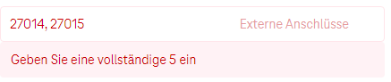

Hallo liebe Community!
Und zwar habe ich vor ein paar Tagen den Tarif "gigakraft 5g 250" abgeschlossen. Dazu bekommt man den neuen Router
"5G Box AX5400"
von Xiaomi. Da ich Warzone spiele und empfohlen wird die Ports dafür freizugeben wollte ich das machen nur ist mir das leider nicht möglich. Der Support konnte mir nach einem 30min Gespräch auch nicht weiterhelfen, da der Router noch zu neu sei und die keinen Experten dafür haben...
Ich habe die APN laut Anleitung auf business.gprsinternet geändert.
Dann wollte ich die Ports bei NAT-Weiterleitung -> Port-Weiterleitung freigeben. Das Problem ist es gibt einige Portranges wie
27014-27050.
Wenn ich diese Ports mit dem "-" bei "Externe Anschlüsse" eingeben will, dann bekomme ich immer die Fehlermeldung "
Geben Sie iene vollständige 5 ein"
und ich kann nicht auf Hinzufügen drücken. (Siehe Anhang)
Hat hier sonst noch jemand dieses Problem und könnte mir weiterhelfen?
Vielen dank im vorraus
Lg
Moritz
@Jonathan Dorian
Ja, ich habe jede mögliche Kombination mit und ohne Abständen usw. versucht. Aber danke für den Tipp!
Ich glaube das ist ein Programmierfehler der ganz einfach zu beheben ist.. mal sehen wie lange sie brauchen..
Lg Moritz
@Jonathan Dorian
Nein leider nicht. Habe ich probiert, aber es lassen sich insgesamt nur 20 Einträge hinzufügen.. Ich würde dafür aber 50+ Einträge brauchen.
Lg Moritz
vor 4 Stunden schrieb schista:@Jonathan Dorian
Nein leider nicht. Habe ich probiert, aber es lassen sich insgesamt nur 20 Einträge hinzufügen.. Ich würde dafür aber 50+ Einträge brauchen.
Lg Moritz
Geht es, wenn du die Ports so einträgst: 27014,27015,27016,....... ?
LG JD.
@Jonathan Dorian
Habe ich auch schon mit und ohne Leerzeichen probiert:

Die Software lässt einfach nicht mehr als 5 zeichen zu. Das wäre so einfach mit einem Softwareupdate zu fixen, aber da werde ich sicher lange darauf warten können...
Am 25.10.2022 um 17:05 schrieb schista:@Jonathan Dorian
Habe ich auch schon mit und ohne Leerzeichen probiert:
Die Software lässt einfach nicht mehr als 5 zeichen zu. Das wäre so einfach mit einem Softwareupdate zu fixen, aber da werde ich sicher lange darauf warten können...
Die Firmware auf dem Modem ist anscheinend wirklich so programmiert, dass du nur einzelne Ports mit 5 Stellen eingeben kannst.
Laut unseren Techniker*innen wird dieser Fehler mit dem kommenden Update der Firmware behoben. Da heißt es nun, sich etwas zu gedulden.
LG JD.
Hallo - ich habe das selbe Problem mit diesem AX5400 und wollte fragen, ob es dazu schon ein Update oder brauchbare Lösung gibt?
lg.Francesco
Am 27.10.2022 um 12:59 schrieb Jonathan Dorian:Die Firmware auf dem Modem ist anscheinend wirklich so programmiert, dass du nur einzelne Ports mit 5 Stellen eingeben kannst.
Laut unseren Techniker*innen wird dieser Fehler mit dem kommenden Update der Firmware behoben. Da heißt es nun, sich etwas zu gedulden.
LG JD.
@Jonathan Dorian
Ich habe nach 6 Monaten nochmal den Support gefragt wann denn endlich ein Update kommt, oder ob sie Manuell meine Portranges freigeben können. Das ist eine Standardfunktion die alle Anbieter außer Magenta besitzen.....
Die Antwort: Dieses Problem war nicht bekannt und es wird auch in Zukunft kein Update dafür kommen. Manuell freigeben kann man das auch nicht....
#LOYAL ≠ EGAL #Willkommen bei Magenta
Dann bleibt mir leider nur Durchhalten und bei der nächstmöglichen Gelegenheit wechseln - danke für die Info!
Gibt es bezüglich Port Freischaltung schon eine Lösung?
{kind=link}
{kind=link}